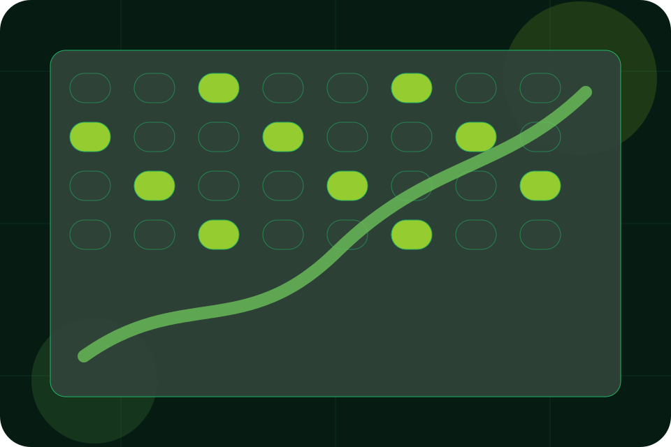

Farm / 01
Farm by Field
Farm shaped for agriculture, farming & rural business decisions.
Farm opens as a clear agriculture decision hub: what Field offers, who it helps, why it matters, and which route to take first.
The first screen combines positioning, proof, primary action, and fast internal navigation, so people can act immediately or compare the rest of the farm route with context.
Agriculture scopeCompare optionsRequest advice
Deep-green grow room hero
Plan the season
Select the closest route and Field keeps the next step, proof, and follow-up expectation aligned with seasonal timing and trust.

Farm / 02
Heritage inside farm
Heritage adds professional context to the farm route, using the vertical farm growth system structure to support seasonal timing and trust before visitors choose a next step.
Field uses growth metric cards and focused copy to make the decision easier to scan, aligning the section with seasonal timing and trust rather than filling space.
Explore FarmHeritage gives the page a specific angle instead of repeating the navigation label.
The growth metric cards show what to compare, what to avoid, and what matters most for agriculture, farming & rural business visitors.
The final cue points to a useful internal route so the section keeps the journey moving.
Farm / 03
Region inside farm
Region adds professional context to the farm route, using the vertical farm growth system structure to support seasonal timing and trust before visitors choose a next step.
Field uses growth metric cards and focused copy to make the decision easier to scan, aligning the section with seasonal timing and trust rather than filling space.
Explore Farm- 01
Context
Region gives the page a specific angle instead of repeating the navigation label.
- 02
Judgment
The growth metric cards show what to compare, what to avoid, and what matters most for agriculture, farming & rural business visitors.
- 03
Direction
The final cue points to a useful internal route so the section keeps the journey moving.
Farm / 04
Who handles team
Team introduces the people, roles, or specialist credibility behind Field so the decision feels less anonymous.
The copy ties names, roles, credentials, or availability back to the decision on the page instead of treating profiles as decorative biographies.
Explore FarmField structures team around role, credibility, and a clear next route so visitors can compare the block quickly before they plan a visit.
Plan VisitFarm / 05
Values inside farm
Values adds professional context to the farm route, using the vertical farm growth system structure to support seasonal timing and trust before visitors choose a next step.
Field uses growth metric cards and focused copy to make the decision easier to scan, aligning the section with seasonal timing and trust rather than filling space.
Explore FarmContext
Values gives the page a specific angle instead of repeating the navigation label.
Farm / 06
Knowledge inside farm
Knowledge adds professional context to the farm route, using the vertical farm growth system structure to support seasonal timing and trust before visitors choose a next step.
Field uses growth metric cards and focused copy to make the decision easier to scan, aligning the section with seasonal timing and trust rather than filling space.
Explore FarmContext
Knowledge gives the page a specific angle instead of repeating the navigation label.
Judgment
The growth metric cards show what to compare, what to avoid, and what matters most for agriculture, farming & rural business visitors.
Direction
The final cue points to a useful internal route so the section keeps the journey moving.
Farm / 07
Suppliers inside farm
Suppliers adds professional context to the farm route, using the vertical farm growth system structure to support seasonal timing and trust before visitors choose a next step.
Field uses growth metric cards and focused copy to make the decision easier to scan, aligning the section with seasonal timing and trust rather than filling space.
Explore FarmSuppliers gives the page a specific angle instead of repeating the navigation label.
The growth metric cards show what to compare, what to avoid, and what matters most for agriculture, farming & rural business visitors.
The final cue points to a useful internal route so the section keeps the journey moving.
Farm / 08
Community inside farm
Community adds professional context to the farm route, using the vertical farm growth system structure to support seasonal timing and trust before visitors choose a next step.
Field uses growth metric cards and focused copy to make the decision easier to scan, aligning the section with seasonal timing and trust rather than filling space.
Explore FarmContext
Community gives the page a specific angle instead of repeating the navigation label.
Judgment
The growth metric cards show what to compare, what to avoid, and what matters most for agriculture, farming & rural business visitors.
Direction
The final cue points to a useful internal route so the section keeps the journey moving.
Farm / 09
Trust, not claims
Trust gives the proof layer for farm: standards, evidence, and reassurance that make the next decision feel grounded.
Instead of relying on vague claims, Field presents visible standards, process cues, and proof artifacts that help agriculture visitors judge fit.
Explore FarmEvidence
Visible proof that helps visitors believe the claims behind trust.
Standard
The quality, safety, or operating expectation this section makes explicit.
Reassurance
What becomes clearer before someone decides whether to plan a visit.
Important notes before you act
Information is provided for planning and should be reviewed for the final client, location, and operating rules.